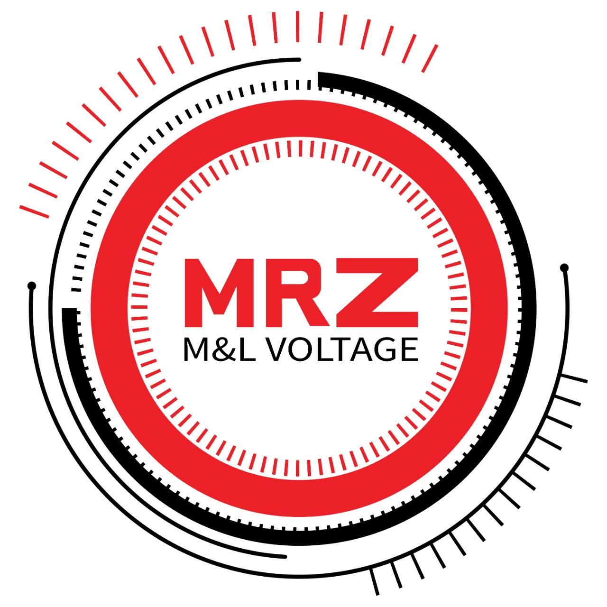

<div id="back">
  <!-- Page Content-->
    <div class="container px-4 px-lg-5" >
      <!-- Heading Row-->
      <div class="row gx-4 gx-lg-5 align-items-center my-5">
          <div class="col-lg-7"></div>
          <div class="col-lg-5">
              <h1 class="font-weight-light">MRZ</h1>
              <p>Engineering For Electromechanical Works "MRZ",
                 has been established in 2004 .lt is one of the leading company in manufacturing and supplying low and medium voltage Panels.
                 The production of the company is characterized  by the complete manufacture of the panels,
                 which pass  through the various stages of production(collection, treatment,painting,copper, control, check and testing).
                 All our products are approved from the Egyptian  Electricity holding companyand passed all the tests of the ultra-high voltage research laboratory.
                 Our company  is certified from ABB as a partner for manufacturing  medium voltage panels.We are constantly developing
                  equipment and machinery to reach the highest levels of  manufacturing technology for our products,
                  Our aim is to reach the highest quality standards to satisfy ou  customers through continuous training of the company's
                  employees and delivery of supply orders to our customers according to the agreed delivery schedules.
                </p>
          </div>
      </div>

      <div class="row gx-4 gx-lg-5">
        <div class="col-md-4 mb-5">
            <div class="card h-100">
                <div class="card-body" >
                  <h2 class="card-title">OUR MISSION</h2>
                  <div class="col-lg-7">   </div>
                    <p class="card-text"> Our Mission is to manufacture and supply
                      high quality mediumand low voltage
                      Panel sasper our expert management
                      system . We have designedand
                      manufacture as per standard to various
                      kinds of medium and low voltage panels
                      to custom requirements.employing cost
                      effective measures in the designand
                      manufacturing of the panels in order to
                      maintain competitiveness</p>
                </div><div class="card-footer" style="background-color:  #ec2127 ;"></div>
            </div>
        </div>
        <div class="col-md-4 mb-5">
          <div class="card h-100">
              <div class="card-body">
                  <h2 class="card-title">OUR VISSION</h2>
                  <div class="col-lg-7">  </div>
                  <p class="card-text">
                    Our Vission is to focus on achieving
                    and maintaining an annual steady
                    elevating growth of business by
                    implementing customer oriented
                    strategies as well as flexible,
                    progressive , reliable and competitive
                    company policies..
                  </p>
              </div>
              <div class="card-footer" style="background-color:  #ec2127 ;"></div>
          </div>
      </div>
      <div class="col-md-4 mb-5">
        <div class="card h-100">
            <div class="card-body">
                <h2 class="card-title">OUR GOALS</h2>
                <div class="col-lg-7">  </div>
                <p class="card-text">
                  He achieves disease by offering
                  Market with innovative and sandy products
                  services.Enhancing market penetration
                  inthelocalmarket.Attracting and sustaining cadres
                  To ensure best business practices.
                  strong connection Loyalty between us and our partners
                  clients.
                </p>
            </div>
            <div class="card-footer" style="background-color:  #ec2127 ;"></div>
        </div>
  </div>
  <div class="col-lg-5">
    <h2 class="font-weight-light" style="color: #ec2127;">Chairman's Message:-</h2>
    <p>Today, looking back on how we started, I am proud to write this message to you.
       Engineering For Electromechanical Works(MRZ),
      was established in 2004 with a small capital and many obstacles,
      but being filled with dreams of a promising future gave me the power towards success.
        Now, after years of hard work and dedication, MRZ is one of the leading Companies in Egypt .
        We believe that the development of our team is essential to further increase our knowledge,
        enhance our experience and strengthen our expertise and That can only be gained from training, development,
         and working in different projects. we are stepping towards success. In the coming years,
          we are aiming at increasing our market share in the Middle East whilst maintaining our reputation as one of the leading companies in Egypt.
      </p>
  </div>
  

  <hr>


